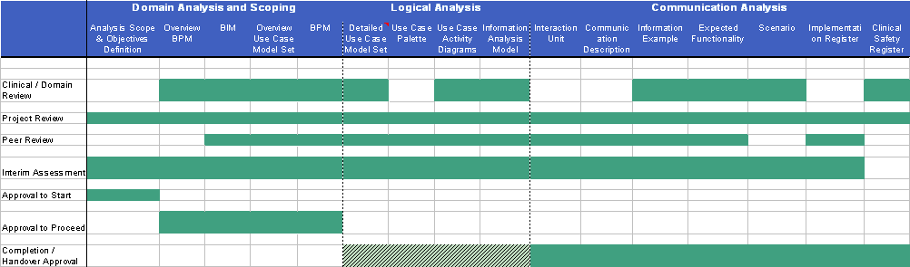

|
Admissions Analysis, Scope & Objectives Definition
|
NPFIT-SHR-MODL-PMLEMER-0007.01 and 1.1
|
|
17th of April 2007, Draft
|
Analysis Scope & Objectives Definition Document
Domain: Admissions
Business Area: Business Requirements
Release/MiM: 7.0
Amendment History:
|
Version
|
Date
|
Amendment History
|
|
1.0
|
08/12/2005
|
Admission to Inpatient Care Business Process Model
(BPM) Scoping Document - last scoping document from
previous analysis
|
|
1.1
|
17/04/2007
|
First draft of 2008-B document for comment by Sarah
Kennedy
|
Forecast Changes:
|
Anticipated Change
|
When
|
Reviewers:
This document must be reviewed by the following. Indicate any delegation for sign off.
|
Name
|
Signature
|
Title / Responsibility
|
Date
|
Version
|
|
Steve Bentley
|
Senior Clinical Consultant
|
|||
|
Andy Carr
|
Clinical Advisor
|
|||
|
Ross Dixon
|
Senior Business Architect
|
Approvals:
This document requires the following approvals:
|
Name
|
Signature
|
Title / Responsibility
|
Date
|
Version
|
|
Jeremy Thorp
|
Director of Business
Requirements
|
|||
|
Ken Lunn
|
Head of Communications
and Messaging
|
|||
|
Paul Jones
|
CTO
|
|||
|
Phil Clayton
|
TO Programme Manager
|
|||
|
Ross Dixon
|
Senior Business Architect
|
Distribution:
<Document text>.
Document Status:
This is a controlled document.
This document version is only valid at the time it is retrieved from controlled filestore, after which a new approved version will replace it.
On receipt of a new issue, please destroy all previous issues (unless a specified earlier issue is baselined for use throughout the programme).
Related Documents:
These documents will provide additional information.
|
Ref no
|
Doc Reference Number
|
Title
|
Version
|
|
1
|
NPFIT-SHR-QMS-PRP-0015.13
|
Glossary of Terms (consolidated)
|
13
|
|
2
|
NPFIT-SHR-MODL-GUID-
0014.04
|
Analysis Authoring Guide
|
1.0
|
|
3
|
NPFIT-FNT-TO-DPM-0684
|
Message Implementation Manual
(MiM) - latest version
|
6.1.01
|
|
4
|
NPFIT-SHR-MODL-PMLEMER-
0001.09
|
Admission to Inpatient Care BPM
Scoping Document
|
1.0
|
|
5
|
NPFIT-FNT-TO-DPM-0558.01
|
Message Implementation Manual
(MiM) - latest version containing
Admissions domain
|
5.2
|
|
6
|
NPFIT-SHR-MODL-PMLEMER-
0006.01
|
Artefact Checklist
|
0.1
|
|
7
|
NPFIT-NCR-PMG-DEL-1468.07
|
2008-B Release Requirements
Mandate
|
3.0
|
Glossary of Terms:
List any new terms created in this document. Mail the NPO Quality Manager to have these included in the master glossary above [1].
|
Term
|
Acronym
|
Definition
|
Contents
1. Purpose 5
2. Significant Changes from Previous Versions 5
3. Introduction 5
3.1. Domain/ Business Area Description 5
3.2. Domain Objectives & Predicted Benefits 5
3.3. Domain Analysis Requirements 5
3.4. Source of Requirements 6
4. Analysis Scope Definition 6
4.1. Overview of Business Process 6
4.2. Impacted Users 6
4.3. Start/End Points of the Analysis 6
4.4. Out of Scope Activities 6
4.4.1. Domain Specific Processes Excluded from Scope 6
4.4.2. 'Common Processes' Excluded from Scope 6
4.5. Exception Conditions to be Included/Excluded from the Analysis 6
4.5.1. Explicit Exception Conditions 7
4.5.2. Assumed Exception Conditions 7
5. Constraints to be Taken into Account During Analysis 7
5.1. Applicable Legislation and/or Policy 7
5.2. Volumetrics 7
5.3. Security Considerations 7
5.4. Legacy Systems Considerations 7
5.5. Implementation Considerations 8
6. Assumptions 8
6.1. User Assumptions 8
6.2. System Assumptions 8
6.3. Communication Assumptions 8
7. Relationships to Other Major Business Processes 8
8. Planned Analysis Artefacts 8
9. Phasing Statement 11
10. Backward Compatibility 11
11. Control 11
11.1. Owner 11
11.2. Custodian 11
Purpose
The purpose of this document is to provide the necessary background/information required to determine the scope of the analysis products that are to be created for the Admissions domain.
That information includes:
Statement of domain business aims and objectives, including the business needs, problems to be solved and an outline of the benefits to be delivered
Identification of which analysis artefacts are required for this project
Scope for each of the analysis artefacts identified
Assumptions to be made in producing the artefacts
Control arrangements in terms of ownership and custodianship
Significant Changes from Previous Versions
| 'Source' Version |
|
|
Introduction
Domain/ Business Area Description
The identification of an Admission should be tied closely to the identification of an Admission on the relevant PAS or other local system and the generation of an Admission to send to PSIS should closely follow the administrative process of admitting a patient and registering a patient on the local system. Admissions can be broadly classified as follows with the associated examples:
Emergency Admission
GP referred (direct to ward or to admissions unit)
OOH service referred
Emergency Department
Direct via Ambulance (e.g. direct admission to Coronary Care)
Elective
Planned surgery
Admission from clinic
Patient mediated (chronic patients e.g. renal)
Other admissions
Maternity
Acute Trusts
Medical, Surgical, Paediatric, Orthopaedic, Rehab etc.
Mental Health
Adult, Child, Mother and baby unit etc.
Community/Intermediate Care
Domain Objectives & Predicted Benefits
The objective of the Admissions domain is to define Admissions messages as CDA (Clinical Document Architecture) documents that will notify the GP and PSIS of a patient's admission into inpatient care. Admissions stored in PSIS will be available to view on CSA, HealthSpace and other clinical systems. These systems can retrieve the Admissions Report document type using the PSIS Query message.
The main benefits associated with making the Admissions message available on PSIS and sending it directly to a GP are:
A GP is notified of a patient's admission into inpatient care.
The GP can then notify other health care providers that the patient is now under inpatient care and will not require other types of care that are provided at the patients home (meals on wheels, district nurse etc.).
The recording of the admission into PSIS will ensure a complete history of the patient's care locations and provide other interested parties (apart from the GP) with a LR (Legitimate Relationship) with the patient to ascertain that patient's status.
Domain Analysis Requirements
Completion and dispatch of Admissions report to PSIS and GP.Source of Requirements
This work builds on the work previously done in the Admissions domain [ref. 4]. The DI domain has also featured in MiM 5.2 [ref. 5]Analysis Scope Definition
Overview of Business Process
The business process includes the process that is required to produce the 'Admission to Inpatient Care' for relevant Care Professionals and for PSIS on SPINE.Impacted Users
PAS Users
GPs
CSA Users
Start/End Points of the Analysis
Business processes, and their associated information requirements, to be covered by this domain analysis commence commences when a patients presents at the appropriate location for admission and are physically admitted to that facility. The analysis is to end when the message is successfully received or fails to arrive at both GP and PSIS.Out of Scope Activities
Domain Specific Processes Excluded from Scope
It is common practice when developing designs for domains to concentrate on a specific area of the business domain, normally by exclusion of commonly understood areas of processes, functionality or information needs. The following specific areas of the domain under consideration are to be excluded from scope:
Discharge message from secondary care, this is covered by a separate message;
Associating admissions with other related admissions and discharges;
'Common Processes' Excluded from Scope
Not applicable.Out of Scope Requirements
Not applicable.Exception Conditions to be Included/Excluded from the Analysis
An exception condition is deemed to be when the process is interrupted. E.g. non receipt of an acknowledgement or any other situation where checks are made and the checks fail. These exceptions can be reflected within several of the analysis artefacts including use cases, as alternative paths, and BPMs. NB The author of this document may not be aware of some of these conditions prior to analysis work commencing. These may need to be discussed with the 'Owner' of the document on an ad hoc basis, and a new version of the scoping document created. In general, the exception conditions to be explicitly modelled are of the 'flow failure' type - i.e. where a flow in the process can fail (such as the non-receipt of an acknowledgement message) NB. This applies only where the prospect of the failure is realistic specific cases of this type of failure are identified in Section 4.5.1 below.Explicit Exception Conditions
The following exception conditions are to be included within the analysis model(s):
Processes involved in the handling of an invalid message associated with an Admissions message;
Assumed Exception Conditions
The following exception conditions can be excluded from the analysis model(s):
Inability to verify/update an LR;
Inability to query/update PDS;
Requirement to merge/de-merge patients records;
Inability to query/update PSIS; and
Infrastructure Failure.
Constraints to be taken into account during analysis
Applicable Legislation and/or Policy
<Summary of the relevant legislation and/or policies relevant to this work, possibly bullet list format. These may include any or all of statute law, DH/NHS policy, NHS Connecting for Health policy, for example, Data Protection Act, Mental Health Act '83, Quality Outcomes Framework (QOF - GP Contract), consent to sharing NCRS records, use of NHS number etc.>
Modernisation Agency and the Emergency Care Collaborative
Schedule 1.1 of the contract contains the following references:
Section 311a.12.1 contains the requirement to view admissions in CSA
Section 770.7.1.1 contains the requirement to send Admissions data to the SPINE
Section 770.7.2.2 contains the requirement to send a notification of an Admission to a GP
Volumetrics
<Provide information on any volumes associated with the domain, specifically referring to numbers of communications where this is appropriate. Other volumes information may include throughput, transactions and number of users (roles or organisations). All volume information should be attributed by quotation of source or statement of basis of assumptions and figures. If reputable figures cannot be provided, indicate scale and make clear the basis of the statement.>Performance
Not applicable.Resilience
Not applicable.Reliability
Not applicable.Usage Numbers
There were approximately 12,678,628 admission episodes for 2005-2006. That's an increase of approx. 500,000 from 2004-2005 and approx. 400,000 from 2003-2004.11 HES FiguresSecurity Considerations
Not applicable.Legacy Systems Considerations
Not applicable.Implementation Considerations
Not applicable.Assumptions
The following assumptions are to be made in undertaking this analysis:User Assumptions
The sender and receiver of the Admissions Notification will have a legitimate relationship with the patient;
That the patient has a registered GP.
System Assumptions
The patient has been given an NHS number and is registered on PDS;
An LR has been established between the patient and the staff sending the Admissions Notification;
That the local system is conducting LR checks.
Communication Assumptions
The PSIS query will be available to systems as a mechanism to retrieve the Admissions message.
The Admissions message will be a MiM 6.1.01 CDA compliant message.
It is assumed the message will carry the following basic content:
Who is being admitted (i.e. NHS No.);
Why they are being admitted (SNOMED + free text);
Where they are being admitted to (which hospital/care facility);
When they were admitted.
Additionally the message should also say who authorised the Admission (clinician) and who receives the message (in this case the GP).
Relationships to Other Major Business Processes
The following boundary business processes are referenced or interacted with from within the scope of this model: <Insert list of known boundary business processes, i.e. ETP, Choose and Book etc>Planned Analysis Artefacts
In addition to this domain scope and objectives definition document we expect the analysis artefacts identified in Table 1 to be created in support of the scope identified above. This will complete the analysis of Admissions. Please note that the current status of the artefacts listed here can be found in the artefact checklist - NPFIT-SHR-MODL-PMLEMER-0006.01. The required review and approval for each of these artefacts is identified in Table 1 and Table 2.

Table 1: artefacts to be produced with corresponding review/approval requirements
Table 2: composition of review / approval boards
Phasing Statement
< A clear statement is required identifying which release/MiM (or sub-release, if appropriate) the analysis refers to (NB the MiM should also be referenced from the 'related documents' table Message Implementation Manual2
Points to consider:
Is there a requirement for multiple versions of the analysis artefacts?
Is there a need for a full artefact set for a particular release/MiM
Is there anything in the planned artefact set that is not expected to be implemented in any of the releases/MiM stated? >
The scope of the domain referred to within this document is restricted to 2008-B Admissions domain as described in MiM 7.0. A full artefact set will not be produced due to the detailed analysis carried out previously.
Backward Compatibility
A statement of the expected requirements for compatibility with the messages identified in the deliverables. For example if PoC messages are to be used for interactions between PSIS and local systems, what is the expected approach to compatibility when the PoC message is updated. Example text is provided below: Any new Admissions system which is integrated to a national service, for example PSIS, will need to use the latest version of the domain communications. If a domain communication changes, then any existing Admissions system will need to update its communications to comply with the new requirements, and complete compliance testing to achieve accreditation. New systems sending communications to national services will be expected to support the most recent version of the domain communications. Existing systems will be expected to support all communications which are current, or no more than one major version behind the current version. Systems receiving communications from national services will be expected to support the most recent version of all communications, and the previous version of the communications. The national services will support the most recent version, and the previous version of the communications. All systems sending or receiving communications to national services will be expected to migrate to the new version over a period of time; typically we would expect no more than two major versions to be supported at any point in time.Control
This document is to be created by the Custodian of the analysis artefacts. The Owner of this document is responsible for reviewing and authorisation of this documentOwner
<enter name of designated Owner> is responsible for the validity of the content of this document.Custodian
Sarah Kennedy is the document author and will also be involved in the management and production of the analysis artefacts.
|
© Crown Copyright 2007
|
Page 2 of 15
|